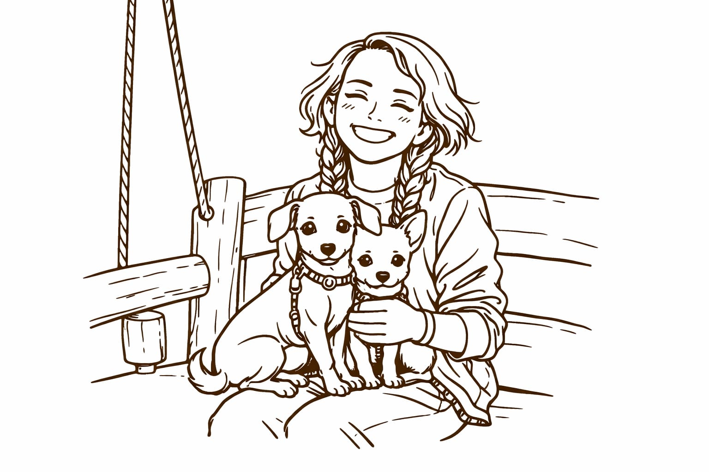

Hola, gracias por tomarte el tiempo de entrar a mi blog, no te imaginas lo feliz que me hace saber que te has tomado unos minutos para navegar por mi primera página web. Me presento, mi nombre es Linda Carrillo, pero muchos me conocen como Linda Chocolatina.
Soy una mezcla de muchas cosas: por una parte, soy estudiante de Análisis y desarrollo de software en el SENA con la firme convicción de convertirme en Creative roduct developer, pero también soy mamá perruna de cuatro perritas, dos de ellas son las cachorras que han puesto mi vida de cabeza.
Vivo en una casita rural y cuido de mis peces, periquitos y una familia de pollitos. Amante de la naturaleza y profundamente conectada con el arte hecho a mano. Me encanta crear con fibras —crochet, bordado, costura— y perderme en esos momentos donde el tiempo parece detenerse mientras algo toma forma entre mis manos.
Durante un tiempo fui profesora, y creo que esa parte de mí sigue viva: me gusta explicar, compartir, traducir lo complejo en algo cercano. Tal vez por eso también nace mi deseo de escribir mejor cada día y de ilustrar ideas, emociones y procesos, no solo con palabras, sino también con imágenes.
Este blog es, en el fondo, un laboratorio personal. Aquí no todo está planeado —y eso está bien— porque este espacio es un pequeño refugio donde comparto lo que hago, lo que creo durante el tiempo de vacaciones y esos momentos simples que, al final, también cuentan una historia.
Si llegaste hasta aquí, gracias por acompañarme. Espero que disfrutes del contenido de este blog. Me encantará leerte en los comentarios de mis publicaciones 💛.